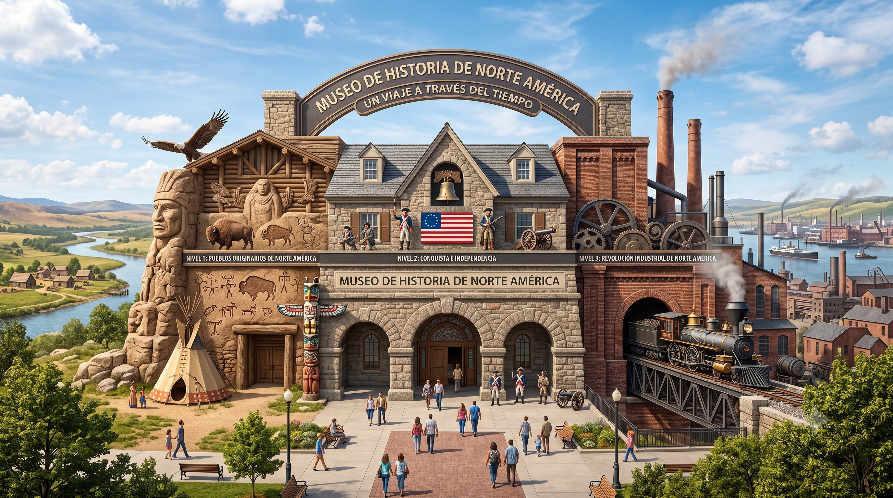

Welcome to the virtual museum. Select a gallery from the menu on the left to begin the tour.

Early America
Copper and Shell Beads from the Poverty Point Earthworks
Date / Period: Late Archaic Period (c. 1700–1100 BCE)
What is it? Exquisitely crafted stone, copper, and shell beads excavated from the monumental concentric earthen ridges of Poverty Point in northeastern Louisiana.
Historical Context: Poverty Point was home to one of the oldest and most massive prehistoric earthwork complexes in North America, requiring an immense, organized labor force to construct features like the 72-foot-tall Mound A. The discovery of raw copper originating from the Great Lakes and shells from the Gulf Coast reveals that this site was not isolated, but rather functioned as a highly active, continental trade hub.
Why is it important? These beads physically demonstrate that thousands of years before European contact, North America was already populated by complex, sedentary Indigenous societies capable of advanced engineering and far-reaching commercial diplomacy.
Turquoise Pendant from Pueblo Bonito (Chaco Canyon)
Date / Period: Ancestral Puebloan Culture (c. 900–1150 CE)
What is it? A highly polished turquoise pendant discovered within the ruins of Pueblo Bonito, a multi-story sandstone and timber "Great House" in northwestern New Mexico.
Historical Context: Chaco Canyon was the center of the Ancestral Puebloan culture, renowned for its massive multi-story Great Houses constructed with highly advanced masonry. This canyon served as a major trade and ceremonial hub, connecting diverse regional peoples who exchanged turquoise, Pacific seashells, and intricately designed pottery. Crucially, the sandstone structures and their radiating road networks were precisely aligned with cardinal, solar, and lunar directions, revealing a profound scientific understanding of astronomy.
Why is it important?This artifact highlights the extraordinary architectural, scientific, and commercial sophistication of Southwest Indigenous societies centuries before European exploration began.
Date / Period: Mississippian Culture (c. 1050–1350 CE)
What is it? A highly detailed, hand-carved ceramic effigy pot representing a human head, showcasing the sophisticated artistry of the Mississippian culture.
Historical Context: Located near modern-day St. Louis, Missouri, Cahokia was the largest pre-Columbian urban metropolis north of Mexico, housing an estimated population of 10,000 to 20,000 residents. At its peak, Cahokia featured over 120 earthen mounds and grand public plazas, dominated by Monks Mound, a colossal earthen construction standing 100 feet tall. Cahokia stood at the center of a continental trade network, exchanging goods from the Great Lakes to the Gulf Coast.
Why is it important? This effigy pot represents the height of pre-Columbian urbanism in the Mississippi Valley, proving that early North American societies built densely populated cities with complex, centralized political systems and robust artistic traditions.
Coquina Stone Block from St. Augustine (Castillo de San Marcos)
Date / Period: Early Spanish Exploration and Settlement (Founded 1565 CE, Castillo stone construction ordered 1672 CE)
What is it? A preserved block of coquina (a rare sedimentary rock made of shell fragments), used to construct the defensive Castillo de San Marcos fort in Florida.
Historical Context: Founded in 1565 by Spanish explorer Don Pedro Menéndez de Avilés, St. Augustine was established as a military outpost to secure Spanish trade routes and defend its gold-laden treasure fleets returning to Europe. It is the oldest continuously inhabited European-settled city in the United States, predating the British at Jamestown by more than forty years. Despite being sacked by English privateers like Sir Francis Drake in 1588, the Spanish repeatedly rebuilt the city, eventually ordering the construction of a permanent stone fort in 1672 to secure Spain's imperial claim.
Why is it important? It marks the early, militarized Spanish presence in North America and challenges the Anglo-centric narrative of American history by showcasing a thriving Spanish-colonial hub established decades before English colonization.
Date / Period: Early English Settlement (c. 1609–1610 CE)
What is it? An excavated, corroded iron key from the early James Fort archaeological site, representing the physical realities of early English colonization.
Historical Context: Jamestown, Virginia, was founded on May 14, 1607, as a commercial venture funded by the joint-stock Virginia Company of London. The early colony suffered extreme hardships due to a severe drought, poor leadership, and relentless conflict with the local Powhatan tribes. This culminated in the devastating "Starving Time" winter of 1609–1610, during which food shortages and disease killed two out of every three colonists. The settlement only survived by transitioning to a commercial tobacco monoculture in 1610 and offering 50-acre land grants to recruit new settlers.
Why is it important? This artifact symbolizes the desperate fragility and high human cost of early English settlements, which ultimately survived only by reshaping their labor forces, land distribution systems, and political institutions.
Date / Period: November 1620 / Early New England Settlement
What is it? A precise, high-resolution reproduction of the historic covenant signed by male passengers aboard the Mayflower before disembarking in Massachusetts.
Historical Context: In late 1620, Separatist Pilgrims fleeing intense religious persecution in England arrived on the shores of Cape Cod to establish Plymouth Colony. Since they had landed outside their chartered territory, the colonists drafted this written agreement to bind themselves into a "civil body politic" under a mutually agreed-upon social contract.
Why is it important? It represents one of the earliest colonial foundations of self-government, popular sovereignty, and the "consent of the governed" in North America, establishing legal precedents that heavily influenced the development of the U.S. Constitution.
Date / Period: 1610s–1620s / Early Southern Colonization
What is it? A fragile, European-styled white clay smoking pipe recovered from the early archaeological layers of the James Fort site in Virginia.
Historical Context: Founded on May 14, 1607, as a commercial venture under the Virginia Company of London, Jamestown initially suffered catastrophic loss of life from disease, drought, and Powhatan conflicts—culminating in the horrific "Starving Time" winter of 1609–1610. The settlement only survived because of the introduction of Caribbean tobacco seeds by John Rolfe in 1610, which turned Virginia into a lucrative agrarian monoculture.
Why is it important? This artifact symbolizes the agricultural savior of English colonization, which directly spurred the "Headright System" of 50-acre land grants, decentralized local self-government, and the rapid expansion of plantation farming that led to the introduction of the first enslaved Africans in 1619.
Date / Period: 17th Century / Native American Diplomacy
What is it? A woven belt constructed from purple and white marine shell beads, utilizing geometric patterns to record a political treaty and diplomatic covenant.
Historical Context: European colonization forced complex diplomatic negotiations. In Plymouth, Wampanoag leader Massasoit Ousamequin forged a strategic alliance with the Pilgrims in 1620 because his people had been devastated by a massive epidemic (1616–1619) and feared conquest by the Narragansett Nation. In the north, the Haudenosaunee (Iroquois) Confederacy used wampum belts to formalize treaties, trade fur, and maintain a powerful, neutral balance of power between competing European empires for nearly two centuries.
Why is it important? It physically demonstrates that Native American nations possessed highly sophisticated legal systems, political structures, and international diplomatic protocols long before and during European settlement.
Date / Period: Late 17th–Mid 18th Century / Mercantilism
What is it? A leather-bound handwritten ledger belonging to a Boston merchant, listing imported manufactured goods from London and exports of timber and cod.
Historical Context: Under England's mercantilist system, colonies were treated as economic tools to enrich the mother country. The Navigation Acts forced port cities like Boston, New York, and Philadelphia to utilize restricted shipping routes, while acts like the Iron Act of 1750 directly prohibited colonists from developing domestic manufacturing industries.
Why is it important? The ledger documents how mercantilism enabled colonial merchants to grow wealthy but simultaneously built deep structural resentment against trade monopolies and "taxation without representation."
Date / Period: December 1662 / Codification of Chattel Slavery
What is it? A preserved print of the legislative act passed by the Virginia House of Burgesses defining the legal status of children born in the colony.
Historical Context: As Southern plantation agriculture grew, colonies transitioned from European indentured servants to lifelong enslaved labor. In 1662, Virginia codified a crucial law establishing that a child's legal status (free or enslaved) strictly followed the condition of the mother (partus sequitur ventrem), overriding English common law.
Why is it important? This law legally institutionalized racialized chattel slavery in America, ensuring that enslavement was a permanent, hereditary condition and transforming human beings and their offspring into lifetime property.
Date / Period: 1754 / Outbreak of the French and Indian War
What is it? A highly detailed military cartographic map of the Ohio River Valley, marking the positions of British claims and French fortifications such as Fort Duquesne in western Pennsylvania.
Historical Context: In 1754, imperial competition between Great Britain and France over control of the fertile Ohio Valley and the Great Lakes boiled over into a small, armed clash over Fort Duquesne. This localized conflict sparked a much larger, global struggle known as the French and Indian War (the North American front of the Seven Years' War). Under William Pitt the Elder, the British Crown poured massive military resources and regular troops into North America, making the continent a primary theater of war for the first time.
Why is it important? The war ended in 1763 with a total British victory and the Treaty of Paris, which forced France to cede Canada and all lands east of the Mississippi River. However, the conflict left Britain with a massive national debt, prompting Parliament to abandon "salutary neglect" and directly tax the colonies to fund frontier garrisons. This map represents the geographic spark that ultimately dismantled the old British-colonial relationship.
What is it? A rare, embossed paper proof sheet showing the official tax stamps that British law required to be affixed to all printed materials in the colonies.
Historical Context: Passed by the British Parliament in 1765, the Stamp Act imposed a direct tax on virtually all printed paper goods, including legal documents, pamphlets, newspapers, and even playing cards. It marked the very first time that Parliament levied a direct tax on the colonists' internal trade rather than regulating external maritime commerce.
Why is it important? The Stamp Act provoked widespread outrage and organized protests, leading to the formation of resistance groups like the Sons of Liberty. Because the colonies had no elected representatives in the British Parliament, Americans argued that the tax violated their fundamental "rights as Englishmen." It crystallized the revolutionary rallying cry: "No taxation without representation."
W"Sons of Liberty" Broadside Protesting the Quartering Act
Date / Period: 1765–1770 / Military Occupation of Boston
What is it? A highly inflammatory, hand-printed public broadside posted on a Boston street, warning citizens of the overreach of the Quartering Act.
Historical Context: In 1765, Parliament passed the Quartering Act, legally requiring colonial governments to provide housing, lodging, and provisions for British regular soldiers stationed in America. As imperial taxes sparked boycotts and unrest, the British government responded by militarily occupying Boston. The forced daily contact between frustrated civilians and armed soldiers created a powder keg. This tension erupted on March 5, 1770, in the Boston Massacre, where British troops fired into an angry crowd, killing five civilians, including Crispus Attucks.
Why is it important? This broadside illustrates how British economic policies transformed into an overt military occupation. The Quartering Act directly interfered with local colonial assemblies and private properties, convincing many moderate colonists that the British Crown was using armed force to strip them of their liberties
Salvaged Tea Crate Panel from the Boston Tea Party
Date / Period: December 16, 1773 / The Boston Tea Party
What is it? A preserved, weathered wooden panel from an East India Company tea chest, salvaged from the waters of Boston Harbor.
Historical Context: In 1773, a severe financial banking crisis brought the British East India Company to the brink of collapse. To save the company, Parliament passed the Tea Act, granting it a trading monopoly in the colonies and undercutting Dutch-smuggled tea. Colonists recognized this as an attempt to force them to accept Parliament's right to tax them. On the night of December 16, 1773, members of the Sons of Liberty disguised themselves as Mohawks, boarded three tea ships, and dumped thousands of pounds of tea into the harbor.
Why is it important? This panel represents one of the most famous acts of civil disobedience in global history. It signaled that colonists were willing to destroy valuable corporate property to defend their political rights, pushing both sides past the point of easy reconciliation.
Official Parliamentary Print of the Coercive (Intolerable) Acts
Date / Period: Mid-1774 / Imperial Crackdown
What is it? A printed booklet of the punitive statutes passed by the British Parliament in 1774, known in Britain as the Coercive Acts and in America as the "Intolerable Acts."
Historical Context: Furious over the destruction of property during the Boston Tea Party, the British government passed these acts to punish Massachusetts. The laws closed Boston Harbor, dismantled the Massachusetts colony's self-government, allowed the military governor general Thomas Gage to quarter troops in private properties, and required trials of crown officials to be held in England.
Why is it important? Parliament intended these acts to isolate and make an example of Massachusetts, but they had the exact opposite effect. The acts galvanized regional unity, prompting the colonies to coordinate their resistance by convening the First Continental Congress in September 1774 and issuing a unified "Declaration of Rights."
Date / Period: July 4, 1776 (Parchment engrossed on July 19, 1776; signing began August 2, 1776)
What is it? A highly accurate facsimile of the original engrossed parchment document adopted by the Second Continental Congress.
Historical Context: Drafted by Thomas Jefferson of the Committee of Five, the Declaration drew heavily on European Enlightenment philosophy, particularly John Locke's natural rights philosophy (asserting that governments derive legitimacy from the "consent of the governed" and exist to secure "Life, Liberty and the pursuit of Happiness"). John Hancock of Massachusetts was the first and most prominent of the 56 delegates to sign.
Why is it important? This document formally severed the political ties between the Thirteen Colonies and Great Britain, establishing the foundational democratic principles of American self-government while simultaneously initiating a profound national paradox by coexisting with racialized slavery.
Date / Period: June 15–19, 1775 / Second Continental Congress
What is it? The official hand-signed commission paper issued by the Second Continental Congress appointing George Washington as commander-in-chief of the newly formed Continental Army.
Historical Context: Following the early armed clashes in Massachusetts, the Continental Congress voted to incorporate local Patriot militias into a central military force. They selected Washington, a wealthy Virginian, to lead the army. Washington formally took command of the troops in Cambridge on July 3, 1775.
Why is it important? This document established Washington's supreme military command, which proved vital in maintaining the army's endurance through catastrophic defeats and harsh winters. Crucially, when Washington surrendered this commission to Congress in December 1783, he cemented the enduring American precedent of civilian control over the military.
Date / Period: Winter 1777–1778 (Valley Forge) / Published 1779
What is it? A preserved print of the official drill manual, Regulations for the Order and Discipline of the Troops of the United States, authored by Prussian officer Baron von Steuben.
Historical Context: During the brutal, disease-ridden winter at Valley Forge, Washington's army suffered from severe lack of supplies, food, and standard training. Baron von Steuben arrived to systematically reorganize the camp, establishing standard military drills, camp sanitation, and uniform tactics.
Why is it important? Von Steuben's training transformed a disjointed force of ragged volunteers into a disciplined, professional, and unified national army. The effectiveness of this training was instantly demonstrated in conventional battle at Monmouth in June 1778.
Facsimile of the 1778 Franco-American Defensive Alliance Treaty
Date / Period: Signed February 6, 1778 / Paris, France
What is it? A facsimile of the military alliance treaty negotiated by Benjamin Franklin, Silas Deane, and Roger Sherman with the French crown.
Historical Context: Following the decisive American victory at the Battle of Saratoga in October 1777—where Horatio Gates and Benedict Arnold forced the surrender of British General John Burgoyne—King Louis XVI was convinced that the United States could defeat Great Britain.
Why is it important? The treaty formally brought French naval forces, regular troops (under Rochambeau), and critical financial loans into the war. This globalized the conflict, forcing Britain to spread its military resources thin and making the final victory at Yorktown tactically possible.
PM Lord Shelburne's Copy of the 1783 Treaty of Paris
Date / Period: Signed September 3, 1783 (Ratified by Congress January 14, 1784)
What is it? An original British printing of the peace treaty negotiated between Great Britain and the American commissioners in Paris.
Historical Context: Following General Cornwallis's catastrophic surrender at Yorktown in October 1781, Britain lost the political will to continue the expensive global war. Negotiators Benjamin Franklin, John Adams, and John Jay bypassed the French court to deal directly with the new, conciliatory British Prime Minister, Lord Shelburne.
Why is it important? The treaty officially ended the war, recognized unconditional United States sovereignty, and ceded a massive territory stretching from the southern border of Canada to Spanish Florida and from the Atlantic to the Mississippi River. However, the exclusion of Native American nations from the treaty set up future conflicts over westward land.
Haudenosaunee "Great Law of Peace" Wampum Belt Facsimile
Date / Period: Pre-Columbian Era (Confederacy unified c. 1200 CE) / Studied by founders in 1785
What is it? A precise museum facsimile of a Haudenosaunee (Iroquois) wampum belt, constructed from purple and white marine shell beads to record the Gayanashagowa, or Great Law of Peace.
Historical Context: The Haudenosaunee Confederacy—comprising the Mohawk, Oneida, Onondaga, Cayuga, and Seneca nations (and later the Tuscarora)—was a highly organized, democratic society. This federal system was studied closely by early American leaders. In 1754, Benjamin Franklin incorporated Haudenosaunee ideas of union into his Albany Plan, and in 1785, Thomas Jefferson, James Madison, and James Monroe visited the Haudenosaunee to study their treaty making and confederation. Congress formally recognized this influence on the U.S. Constitution in a Concurrent Resolution in 1988.
Why is it important? It demonstrates that North America's first federal democracy was an Indigenous creation that directly shared political concepts with the framers of the U.S. Constitution.
Roger Sherman's Pocket Draft of the Great Compromise
Date / Period: 1787–1788 / The Ratification Crisis
What is it? A rare, preserved first-edition printing of the collected essays written under the joint pseudonym "Publius."
Historical Context: The draft Constitution sparked a fierce national debate. Anti-Federalists feared that a strong central government would erode state sovereignty and that the presidency would evolve into a monarchy. In response, Alexander Hamilton, James Madison, and John Jay published 85 essays arguing that a large republic was the best way to control factions and preserve individual liberties.
Why is it important? This volume represents the ultimate intellectual defense of the U.S. Constitution, shaping the ratification debates and providing the foundational definitions of American federalism.
First Edition Bound Volume of "The Federalist" (Publius)
Date / Period: Winter 1777–1778 (Valley Forge) / Published 1779
What is it? A preserved print of the official drill manual, Regulations for the Order and Discipline of the Troops of the United States, authored by Prussian officer Baron von Steuben.
Historical Context: During the brutal, disease-ridden winter at Valley Forge, Washington's army suffered from severe lack of supplies, food, and standard training. Baron von Steuben arrived to systematically reorganize the camp, establishing standard military drills, camp sanitation, and uniform tactics.
Why is it important? Von Steuben's training transformed a disjointed force of ragged volunteers into a disciplined, professional, and unified national army. The effectiveness of this training was instantly demonstrated in conventional battle at Monmouth in June 1778.
George Washington's Whiskey Rebellion Uniform Coat
Date / Period: October 1794 / The Washington Presidency
What is it? The preserved wool military coat worn by President George Washington when he took the field to personally command troops in the western counties.
Historical Context: Alexander Hamilton’s financial plan imposed a federal excise tax on whiskey, which prompted violent resistance from western farmers. Invoking the precedent of civilian control of the military, Washington personally led a militia of 13,000 troops to enforce the law and suppress the rebellion.
Why is it important? It proved the strength of the new federal government. Unlike the government's helpless response to Shays' Rebellion under the Articles of Confederation, Washington's actions demonstrated that the national government under the Constitution possessed the power and will to enforce its laws.
Original Printed Pamphlet of the Sedition Act of 1798
Date / Period: July 1798 / The Adams Presidency
What is it? A government-printed broadside containing the text of the Sedition Act, passed by the Federalist-controlled Congress.
Historical Context: During the Quasi-War with France, partisan divisions reached a crisis. The Sedition Act criminalized writing or speaking maliciously against the federal government, leading to the arrest of Democratic-Republican editors. This sparked an intense debate over free speech, prompting Jefferson and Madison to anonymously write the Kentucky and Virginia Resolutions, which introduced the radical concept of state "nullification."
Why is it important? This artifact represents the first major domestic crisis over national security, civil liberties, and free speech under the Constitution, fueling the partisan battle that led to the "Revolution of 1800."
What is it? A landmark agreement in which the U.S. purchased 828,000 square miles of territory from France for $15 million.
Historical Context: President Jefferson prioritized the strategic control of the Mississippi River and the port of New Orleans over his own "strict constructionist" constitutional views.
Why is it important? It effectively doubled the size of the nation, removed a major European threat, and provided the spatial foundation for a continental empire.
What is it?An allegorical painting depicting a celestial woman leading white settlers west, bringing "light" and technology into the "dark" wilderness.
Historical Context: This image visualizes the ideology of Manifest Destiny, portraying expansion as a peaceful and divinely sanctioned "tide of civilization".
Why is it important? It served as a powerful propaganda tool to manufacture public consent for the displacement of Indigenous peoples and the destruction of the environment.
What is it? Silver medals given by Lewis and Clark to tribal chiefs to signify allegiance and establish the U.S. President as the "Great White Father".
Historical Context: Lewis and Clark acted as military officers and diplomatic agents of empire, using these "sovereignty tokens" to establish discovery claims.
Why is it important? These medals reframed Native Americans as "children" to a new federal authority, laying the rhetorical groundwork for future land dispossession.
What is it? Permanent physical grooves carved into sandstone by the wheels of hundreds of thousands of westbound wagons.
Historical Context: The 2,170-mile trek relied on South Pass, a broad, easy gap in the Rockies that allowed wheeled vehicles to cross the Continental Divide.
Why is it important? They are scars on the landscape representing the "demographic conquest" of the West by nearly 500,000 settlers seeking fertile land.
The Fort Laramie Treaty of 1851 (Horse Creek Treaty)
Date / Period: 1851
What is it? A peace agreement defining tribal boundaries and securing safe passage for overlanders in exchange for government annuities.
Historical Context: Negotiated with 10,000 Native Americans, the treaty introduced the concept of legally delineated, exclusive land ownership to Plains nations.
Why is it important? It resulted in cartographic dispossession, systematically reducing tribal territories and making tribes dependent on the government for food and money.
What is it? A wide-angle view of a Southern plantation showing enslaved laborers in a dense field of cotton.
Historical Context: By 1860, the South supplied 75% of the world’s cotton, and the crop accounted for almost 60% of total American exports.
Why is it important? Cotton's dominance led to the "King Cotton" ideology, convincing Southerners that their agricultural might was enough to command the respect of the world.
Lowell Textile Mill Illustration and Worker Broadside)
Date / Period: 1830s–1850s
What is it? A print depicting a New England textile mill alongside a broadside detailing factory rules and wage schedules for female and immigrant mill workers.
Historical Context: As industrialization gained momentum in New England, small artisanal workshops were rapidly replaced by large-scale factories, transforming human labor into a market commodity.
Why is it important? It illustrates the fundamental shift in the Northern economy away from household production toward mechanized mass manufacturing, creating a distinct urban working class and middle class.
What is it? A map showing the 36°30' line dividing "free" and "slave" territory within the Louisiana Purchase.
Historical Context: As new states were organized, the status of slavery became a matter of fierce contention in Congress; the 1820 compromise served as a temporary solution.
Why is it important? It marks the early stages of the "Sectional Crisis," revealing that westward expansion was exposing deep-seated national weaknesses.
What is it? A concise audiovisual summary of the conflict between the Union and the seceded Confederate States.
Historical Context: The war ignited in April 1861 at Fort Sumter over the controversy of the enslavement of Black people. Eleven Southern states formed the Confederacy, challenging the Union's support for the U.S. Constitution. Over four years, armies fought intense campaigns across multiple theaters. Strategies evolved from early hopes of a short war to a grueling war of attrition that devastated Southern infrastructure. The conflict effectively ended in April 1865 with General Robert E. Lee's surrender at Appomattox Court House.
Why is it important? It remains the deadliest military conflict in American history, ultimately resulting in the collapse of the Confederacy and the abolition of slavery, which freed four million people.
What is it? A strategic military map illustrating General-in-Chief Winfield Scott’s "Anaconda Plan".
Historical Context: Early in the war, Union leaders realized the need for a long-term strategy to "squeeze" the South. The plan called for a naval blockade of Southern ports and Union control of the Mississippi River to divide the Confederacy and cut off its resources.
Why is it important? It set the stage for the Union’s strategy of attrition, aiming to strangle the Confederate economy by preventing the export of cotton and the import of vital goods.
What is it? An illustration or painting depicting the intense fighting, specifically "Pickett’s Charge" on the Union center.
Historical Context: General Robert E. Lee attempted a final northern incursion into Pennsylvania, hoping a decisive win would cause the North to withdraw support for the war. The three-day battle involved over 160,000 soldiers and culminated in a failed Confederate assault.
Why is it important? It was the "bloodiest battle" of the war with 51,000 casualties and served as the turning point that prevented the Confederacy from achieving victory on Union soil.
What is it? An executive order issued by President Lincoln declaring that all persons held as slaves within rebelling states "shall be then, thenceforward, and forever free".
Historical Context: Initially, ending slavery was not a key Union objective, but by mid-1862, Lincoln saw it as a necessary "war measure" to weaken the Confederacy. He waited for a Union victory at Antietam to issue the proclamation from a position of strength.
Why is it important? While it freed few slaves immediately, it was the "death knell" for slavery, ensuring the institution would not survive a Union victory and allowing Black men to enlist in the Union forces.
What is it? A brief speech delivered by President Abraham Lincoln at the dedication of the Soldiers' National Cemetery.
Historical Context: Following the massive Union victory at Gettysburg, Lincoln sought to honor the fallen and redefine the war's purpose beyond mere preservation of territory. He framed the conflict as a test of whether a nation dedicated to the proposition that "all men are created equal" could survive.
Why is it important? It transformed the war's meaning, promising that the sacrifice of soldiers would lead to a "new birth of freedom" and ensure that democratic government would not "perish from the earth".
The Reconstruction Amendments (13th, 14th, and 15th)
Date / Period: 1865–1870.
What is it? Three constitutional amendments passed in the five years immediately following the Civil War.
Historical Context: These were designed to restructure the U.S. from a nation "half slave and half free" to one where the "blessings of liberty" extended to former slaves. The 13th abolished slavery, the 14th provided a broad definition of national citizenship and equal protection, and the 15th granted voting rights regardless of race.
Why is it important? They gave the national government more power over the states to protect individual rights.
What is it? Records and artifacts from the Bureau of Refugees, Freedmen, and Abandoned Lands.
Historical Context: This federal agency assisted former slaves in their transition to freedom by issuing food, operating hospitals, and establishing schools. Officers also helped legalize marriages entered into during slavery and supervised labor contracts.
Why is it important? It represented the first major federal effort to provide social welfare and documented the early experiences of the Black community in freedom.
What is it? Biographical profiles of the seven trailblazing Black men who first served in Congress, including Senator Hiram R. Revels and Representative Joseph H. Rainey.
Historical Context: These leaders emerged during a "brief window of opportunity" where African Americans gained political representation. They advocated for reconciliation, civil rights legislation, and educational opportunities.
Why is it important? Their presence symbolized the federal government’s initial commitment to racial equality and the aspirations of millions of newly emancipated people.
What is it? An educational video detailing an economic system where laborers traded work for a share of the harvest.
Historical Context: Without land of their own, former slaves were often reduced to working for former masters. Falling cotton prices and high interest for tools and seeds meant laborers often fell further into debt each year.
Why is it important? This structure created "near slavery conditions" that tied families to specific geographical areas and prevented them from purchasing their own land.
What is it? A visual summary of the end of Reconstruction and the subsequent rise of systemic segregation.
Historical Context: After northern troops left in 1877, progress was curtailed by the rise of "Jim Crow" laws and violence. This led to a nearly century-long absence of Black representatives in many Southern states.
Why is it important? It explains how the collapse of federal commitment led to the systematic erasure of African American political gains.
Date / Period: Post-Reconstruction Era (late 19th century)
What is it? A heavy iron railroad spike and a section of steel rail ingot used during the rapid construction of the transcontinental railroad network.
Historical Context: The expansion of the railroad was the central physical engine of late nineteenth-century American industrialization. By physically integrating previously isolated regional economies, the railroads established a unified national market. This rapid connectivity accelerated the movement of goods, raw materials, and labor, facilitating the concentration of capital and allowing corporate trusts and monopolies to employ vertical and horizontal integration to control entire sectors of the U.S. economy.
Why is it important? This artifact represents the physical integration that made sustained national and industrial power possible, illustrating how structural connectivity acts as a prerequisite for capital consolidation.
Alexander Graham Bell’s Centennial Telephone Instrumen
Date / Period: 1876
What is it? An authentic replica of the electromagnetic voice-transmission instrument patented and publicly exhibited by Alexander Graham Bell in 1876.
Historical Context: Bell’s telephone revolutionized commercial communication by enabling instant voice contact between corporate offices, industrial plants, buyers, and suppliers. By the 1920s, Theodore Vail’s American Telephone & Telegraph Company (AT&T) expanded this invention into a nationwide communications infrastructure comprising 16 million interconnected telephones, facilitating complex corporate coordination.
Why is it important? By substituting instant voice dialogue for slower written mail and telegraph dispatches, the telephone allowed corporate executives to coordinate manufacturing plants, branch offices, buyers, and suppliers in real time. By the 1920s, Theodore Vail’s American Telephone & Telegraph Company (AT&T) expanded this invention into a nationwide communications infrastructure comprising 16 million interconnected telephones.
Thomas Edison’s Incandescent Lamp and DC Utility Generator
Date / Period: 1879–1880s
What is it? An early glass incandescent light bulb displayed alongside a model of a central direct-current (DC) power distribution generator engineered by Thomas Edison.
Historical Context: Edison’s electric lighting and central power system replaced gas illumination and candles, lighting city streets and powering urban homes and commercial buildings.
Why is it important? n manufacturing, electric power removed factory dependence on natural daylight, allowing plant managers to add overnight shifts and operate industrial machinery around the clock. Bright street lighting and electric streetcars also extended active urban hours, spurring the development of modern night-time commerce and entertainment
Pullman Palace Sleeper Car Model & Standard Gauge Rail Track
Date / Period: 1865–1890s
What is it?A scale model of a luxury Pullman Palace sleeping car mounted on a section of standardized railroad track measuring 4 feet, 8.5 inches in width.
Historical Context: George Pullman’s sleeping cars made long-distance travel comfortable, while railroad expansion created structured corporate management systems and nationwide transportation channels.
Why is it important? Industry-wide conversion to a standard 4' 8.5" track width alongside the implementation of standardized railway time zones in November 1883 enabled competing rail lines to share track and rolling stock without unloading freight or resetting local clocks. This technological standardization integrated isolated regional routes into a seamless, continental market economy.
Standard Oil Trust Share Certificate & Udo Keppler’s "Next!" Cartoon
Date / Period: 1882 / 1904.
What is it? An original share certificate from the Standard Oil Trust displayed alongside Udo Keppler’s 1904 political cartoon "Next!", which depicts Standard Oil as a giant octopus wrapping its tentacles around steel, copper, shipping, state houses, and the U.S. Capitol while reaching for the White House.
Historical Context: John D. Rockefeller combined horizontal integration (buying competing oil refineries) with vertical integration (owning oil wells, pipelines, and retail outlets) to establish Standard Oil and form the nation's first major trust in 1882.
Why is it important? By securing secret railroad rebates, undercutting rivals, and dominating pipeline distribution, Standard Oil established control over roughly 90% of U.S. oil refining. Keppler's cartoon reflects the public anxiety surrounding Gilded Age corporate monopolies, capturing fears that unregulated trusts wielded disproportionate power that threatened democratic political institutions.
U.S. Public Health Service Inspection Card and Line Inspection Chalk
Date / Period: 1910s–1920s (Progressive Era)
What is it?A chalk stick alongside an authentic immigrant inspection card issued by the United States Public Health Service at the Ellis Island Immigration Station in New York Harbor .
Historical Context:Between 1892 and 1954, Ellis Island served as the primary entry port for over twelve million European immigrants. As arriving passengers walked up the stairs to the Registry Room, Public Health Service doctors conducted rapid visual "six-second physicals" to detect medical impairments. Inspectors used chalk to write shorthand letters directly onto immigrants' coats—such as H for heart disease, E for eye ailments (trachoma), L for lameness, or X for suspected mental deficiency.
Why is it important? These chalk marks determined whether an immigrant was cleared for immediate entry or held for detailed medical examination and special inquiry under federal rules excluding those labeled "Likely to Become a Public Charge" (LPC). While Ellis Island was structured for rapid throughput—processing most arrivals within three hours to a single day and rejecting only 1% to 6% of applicants—the chalk inspection symbolized how federal authorities evaluated incoming human labor through strict physical and economic parameters.
Carved Wall Panel from the Angel Island Detention Barracks
Date / Period: 1910–1940
What is it? A preserved wooden wall plank from the men's detention barracks at the Angel Island Immigration Station in San Francisco Bay, featuring classical Cantonese poetry carved into the wood.
Historical Context: Opened in 1910 to enforce the Chinese Exclusion Act of 1882—the first federal law barring entry based explicitly on race and class—Angel Island functioned primarily as a secure processing and detention facility for trans-Pacific immigrants.
Why is it important? Unlike Ellis Island's rapid processing model, Asian arrivals at Angel Island were subjected to prolonged detentions lasting from weeks to six months—and in extreme cases up to twenty-two months—while facing grueling, multi-day interrogations designed to expose "paper sons" holding falsified family records. Public Health Service officers also enforced invasive physical and laboratory screenings for parasites. Rejection rates at Angel Island reached between 18% and 33%. he poems carved into the wooden walls remain a permanent literary testament to the anguish, isolation, and quiet resistance of Chinese detainees.
Jacob Riis’s Magnesium Flash Powder Camera & How the Other Half Lives
Date / Period: 1887–1890 (Gilded Age)
What is it? An early detective camera equipped with a magnesium flash powder lamp, displayed alongside a first-edition copy of Jacob Riis’s 1890 photojournalistic landmark, How the Other Half Lives.
Historical Context: By 1890, New York City was the most densely populated city in the United States, with more than 80,000 tenements housing 2.3 million people—nearly 67% of the city’s population. Speculative dumbbell tenements lacked adequate light, air shafts, and indoor plumbing, creating extreme public health crises.
Why is it important? Danish immigrant and police reporter Jacob Riis used the newly invented magnesium flash powder to illuminate dark, windowless tenement rooms, windowless rear alleys, and nocturnal police lodging houses. His striking photographs and statistical exposures shocked middle- and upper-class readers, popularizing muckraking journalism and proving that urban poverty was rooted in environmental squalor rather than personal moral failing. Riis’s work directly catalyzed housing reform, leading to the New York State Tenement House Act of 1901 ("New Law"), which outlawed windowless rooms, mandated courtyard air shafts, and required private indoor toilets for every two families.
Lewis Hine’s Graflex Camera and NCLC Child Labor Photographs
Date / Period: 1908–1916 (Progressive Era)
What is it? A large glass-plate Graflex camera used by sociologist Lewis Hine, shown with original photographic prints taken for the National Child Labor Committee (NCLC) depicting young newsboys and factory workers.
Historical Context: Driven by rapid industrial growth and low family wages, the number of working children under fifteen climbed to roughly two million by 1910. Industrialists favored child workers because they performed unskilled labor for lower wages, possessed small hands adept at clearing machine jams, and were unlikely to organize.
Why is it important? Hine quit his teaching career in 1908 to work as an investigative photographer for the NCLC. Masquerading as a Bible salesman or machinery inspector to bypass factory guards, Hine took hidden notes and exact measurements of children working 10-to-12-hour shifts in textile mills, coal breakers, glass factories, and street trades. His "photo-interpretations" provided undeniable visual evidence of stunted growth, physical injuries, and illiteracy among child workers. Hine’s work helped pass state compulsory education laws and federal measures like the Keating-Owen Child Labor Act of 1916.
Scorched Sewing Machine Parts from the Triangle Shirtwaist Factory
Date / Period: March 25, 1911 (Progressive Era).
What is it? Heat-deformed metal sewing machine heads and an iron door lock mechanism recovered from the 9th floor of the Asch Building following the Triangle Shirtwaist Factory fire.
Historical Context: On Saturday, March 25, 1911, a fire erupted in a fabric scrap bin on the 8th floor of the Triangle Waist Company in Manhattan. The factory employed roughly 500 workers, mostly young Italian and Jewish immigrant women working 52 hours a week for meager wages.
Why is it important? The disaster claimed 146 lives. rapped by exit doors that management locked to prevent theft and unauthorized breaks, a collapsed iron fire escape, and fire department ladders that reached only to the 6th floor, dozens of seamstresses burned or jumped to their deaths. Public outrage over the owners' acquittal led labor organizations (ILGWU, NWTUL) and Tammany politicians to establish the New York Factory Investigating Commission, co-chaired by Robert F. Wagner and Al Smith with field research by Frances Perkins. The commission's findings produced over 30 state labor laws mandating automatic sprinklers, unlocked exits, fire drills, and factory inspections, serving as the blueprint for federal OSHA standards.
Theodore Roosevelt's "Trust-Busting" Baton & Northern Securities Case Legal Brief
Date / Period: 1902–1904 (Progressive Era)
What is it? An official courtroom brief from Northern Securities Co. v. United States (1904) displayed alongside a political cartoon depicting President Theodore Roosevelt wielding a "big stick" against corporate monopolies.
Historical Context:In 1902, President Theodore Roosevelt instructed his Attorney General to file an antitrust lawsuit under the Sherman Antitrust Act against the Northern Securities Company, a massive railroad holding company organized by J.P. Morgan, James J. Hill, and E.H. Harriman that held a virtual monopoly in the Pacific Northwest.
Why is it important? The Supreme Court’s 1904 ruling ordered the dissolution of Northern Securities, establishing the precedent that mega-corporations were subject to federal authority. This victory launched Roosevelt's "Square Deal" agenda, under which his administration filed over 40 antitrust suits to distinguish between "good" trusts that provided efficient public services and "bad" trusts that abused market power to stifle competition.
What is it? An original 1906 first-edition printing of Upton Sinclair’s muckraking novel The Jungle, shown alongside a brass federal meat inspection ink stamp used by the U.S. Department of Agriculture.
Historical Context: Journalist Upton Sinclair wrote The Jungle to expose the hazardous working conditions and economic exploitation endured by immigrant workers in Chicago's stockyards. However, his vivid descriptions of contaminated and unsanitary meat production inadvertently caused a massive public outcry among middle-class consumers.
Why is it important? Capitalizing on the public outrage generated by Sinclair's exposure, President Roosevelt pressured a reluctant Congress to pass the Pure Food and Drug Act of 1906 and the Meat Inspection Act of 1906. These twin legislative landmarks established the precedent of federal government oversight in consumer protection, food purity, and pharmaceutical safety.
Jane Addams' Hull House Demographic Survey Map & Settlement Ledger
Date / Period: 1889–1895 (Gilded Age / Early Progressive Era)
What is it? A color-coded, hand-annotated neighborhood map detailing household nationalities and income levels on Chicago's Near West Side, published by Jane Addams and the residents of Hull House.
Historical Context: Founded in Chicago in 1889 by Jane Addams and Ellen Gates Starr, Hull House became America's most famous settlement house. College-educated, middle-class women lived directly within working-class immigrant neighborhoods to provide childcare, English literacy classes, public baths, and vocational training.
Why is it important? Addams and her fellow social workers gathered rigorous statistical data on tenement crowding, disease rates, and child labor abuses. They used this empirical research to successfully lobby municipal and state governments for compulsory education laws, juvenile courts, factory safety codes, and sanitation improvements, establishing the foundations of modern social work and grass-roots Progressive reform.
Alice Paul’s National Woman's Party "Silent Sentinel" Picket Banner
Date / Period: 1917–1920 (Progressive Era / WWI))
What is it? An original purple, white, and gold canvas banner carried by National Woman's Party (NWP) picketers outside the White House, embroidered with the message: "Mr. President, How Long Must Women Wait for Liberty?"
Historical Context: While Carrie Chapman Catt led the two-million-member National American Woman Suffrage Association (NAWSA) through moderate state-by-state lobbying and patriotic support for WWI, Alice Paul and Lucy Burns founded the NWP to demand an immediate federal constitutional amendment. Starting in January 1917, the NWP organized the "Silent Sentinels"—the first continuous White House pickets in U.S. history.
Why is it important? When NWP picketers were arrested and imprisoned at the Occoquan Workhouse, their hunger strikes and brutal force-feedings generated immense public sympathy. This militant pressure, combined with NAWSA's diplomatic lobbying, created a dual-pressure system that forced President Woodrow Wilson to endorse woman suffrage, culminating in the ratification of the Nineteenth Amendment in 1920.
The 16th and 17th Constitutional Amendment Documents & Federal Reserve Peny
Date / Period: 1913 (Progressive Era)
What is it? Legislative enrollment copies of the 16th Amendment (Federal Income Tax) and 17th Amendment (Direct Election of Senators), displayed with an engraved fountain pen used during the signing of the Federal Reserve Act of 1913.
Historical Context: In 1913, during the early presidency of Woodrow Wilson, a surge of long-sought Progressive structural reforms transformed the U.S. Constitution and the national financial system.
Why is it important? The 16th Amendment authorized a federal income tax, providing a stable revenue stream to fund government regulation, while the 17th Amendment replaced state legislature selection of U.S. Senators with direct popular vote, reducing the power of political machines. Concurrently, the Federal Reserve Act created a central banking system to manage currency, control interest rates, and stabilize financial panics, solidifying the modern federal regulatory framework.
Log Book Page of Submarine U-20 & RMS Lusitania Lifeboat Warning Notice
Date / Period: May 7, 1915 / World War I
What is it? An official log book page from the German submarine U-20, commander Walther Schweiger, displayed alongside an original newspaper warning notice published by the German Embassy in Washington.
Historical Context: On May 7, 1915, U-20 torpedoed the British passenger liner RMS Lusitania off the Irish coast without warning. The vessel sank in eighteen minutes, killing 1,198 civilians, including 128 American citizens.
Why is it important? The disaster outraged the American public and forced President Woodrow Wilson to abandon "strict neutrality" in favor of a national "preparedness movement". Germany temporarily issued the Sussex Pledge to restrict submarine attacks, but its decision to restart unrestricted submarine warfare in January 1917, combined with the intercepted Zimmermann Telegram, ultimately drove the U.S. Congress to declare war on April 6, 1917.
Henry Ford’s Model T Flywheel & Assembly Line Steering Wheel
Date / Period: 1920s (The Roaring Twenties)
What is it? A cast-iron flywheel and wooden-rimmed steering wheel from a 1920s Model T Ford, engineered for high-speed assembly line manufacturing .
Historical Context: Henry Ford revolutionized industrial production by introducing the moving assembly line, where specialized workers turned out a new automobile every 24 seconds. By 1929, roughly 23 to 27 million registered motor vehicles were traveling on American roads—nearly one per household.
Why is it important? Mass production of the Model T drove the 1920s economic boom, lowering manufacturing costs and providing factory jobs to unskilled laborers. It stimulated connected industries (steel, glass, rubber) and fostered a nationwide consumer culture powered by cheap credit, household appliances, and radio broadcasting.
Harlem Jazz Club Saxophone & First-Edition Sheet Music of Louis Armstrong
Date / Period: 1920s (Harlem Renaissance / Jazz Age)
What is it? A brass tenor saxophone played in a Harlem nightclub, displayed alongside original 1920s sheet music by Louis Armstrong and Duke Ellington.
Historical Context: Driven by the Great Migration, over a million African Americans relocated from the Jim Crow South to Northern cities like New York. Harlem became the intellectual and artistic capital of Black America, nourishing a cultural flowering known as the Harlem Renaissance .
Why is it important? Musicians like Louis Armstrong, Duke Ellington, and Bessie Smith, alongside writers like Langston Hughes and Zora Neale Hurston, created distinct art forms that celebrated Black identity and challenged racial stereotypes. his music defined the "Jazz Age" and accompanied the rise of the "flapper"—young, liberated women who embraced bobbed hair, short skirts, and social independence following the ratification of the 19th Amendment in 1920.
National Origins Quota Calculation Ledger & Legislative Pen from the Immigration Act of 1924
Date / Period: May 26, 1924 (Post-WWI Nativist Era)
What is it? An official U.S. Census Bureau calculation sheet used to establish national origins immigration quotas under the Johnson-Reed Act, displayed with an archival signing pen.
Historical Context: Post-WWI anti-immigrant sentiment, the 1919–1920 Red Scare, and pseudo-scientific eugenics lobbying led Congress to abandon traditional open-door immigration policies. After passing the temporary Emergency Quota Act in 1921, Congress enacted the permanent Immigration Act of 1924.
Why is it important? Sponsored by Representative Albert Johnson and Senator David Reed, the 1924 law capped total annual immigration at approximately 164,000–165,000 and calculated country quotas at 2% of each nationality's foreign-born population in the 1890 Census. By using the 1890 census—taken before the large influx of Southern and Eastern European Catholics and Jews—the law allocated 85% of visas to Northern and Western Europe. Furthermore, it barred all "aliens ineligible for citizenship," completely excluding Asian immigrants and ending mass immigration until 1965.
Dorothea Lange's "Migrant Mother" Print & "Hooverville" Metal License Plate
Date / Period: 1929–1936 (The Great Depression)
What is it? An original silver gelatin photographic print of Florence Owens Thompson ("Migrant Mother") taken by Dorothea Lange, shown with a hand-stamped scrap metal stove plate from a Seattle "Hooverville" shantytown.
Historical Context: Following the October 1929 stock market crash, the U.S. economy collapsed into the Great Depression. Unprecedented monetary contraction and systemic bank failures shrank the national money supply by one-third, shuttering over 10,000 commercial banks and driving unemployment to 25% (13–15 million workers).
Why is it important? Millions of evicted and jobless Americans were forced into breadlines and cardboard shantytowns called "Hoovervilles" in contempt of President Herbert Hoover. In the Great Plains, severe drought and soil erosion caused the Dust Bowl, forcing displaced farm families ("Okies") to migrate westward to California. This human catastrophe destroyed public faith in unregulated markets, leading to the 1932 election of Franklin D. Roosevelt and the creation of New Deal programs (CCC, WPA, Social Security) that permanently expanded federal economic responsibility.
What is it? A color lithograph poster promoting youth environmental work, sourced from the Prints and Photographs Division of the Library of Congress.
Historical Context: Commissioned during the Great Depression through the Work Projects Administration (WPA), this artwork features a striking illustration of a young man holding a pickaxe, symbolizing the physical reclamation of the American landscape and the nation's idle youth. The program recruited unemployed young men for natural resource conservation projects, paying them thirty dollars per month, twenty-five of which was automatically sent home to their parents to stimulate local economies.
Why is it important? This artifact analyzes the massive expansion of federal power and state-sponsored employment programs under President Roosevelt’s New Deal, utilizing public art to build national morale and manage labor unrest.
President Franklin D. Roosevelt's Hand-Amended First Draft of the "Day of Infamy" Speech
Date / Period: December 7, 1941
What is it? A cast-iron flywheel and wooden-rimmed steering wheel from a 1920s Model T Ford, engineered for high-speed assembly line manufacturing.
Historical Context: Dictated to his secretary Grace Tully on the afternoon of December 7, 1941, immediately following the surprise attack on Pearl Harbor, FDR rejected a long list of Japanese grievances in favor of a brief, decisive appeal. Directly on this paper, Roosevelt crossed out "a date which will live in world history" and wrote the word "infamy." He also changed the attack's description from "simultaneously and deliberately" to "suddenly and deliberately" and accepted a pen-and-ink addition from advisor Harry Hopkins invoking the "inevitable triumph—so help us God."
Why is it important? This draft provides an intimate look at the meticulous crafting of political rhetoric during a supreme national crisis, serving as the political call to arms that instantly unified a deeply divided, isolationist nation onto a total war footing.
What is it? Law 88-408, passed by Congress and signed by President Lyndon B. Johnson, authorizing the president to take all necessary measures to repel attacks against U.S. forces in Southeast Asia, preserved in NARA's Record Group 11.
Historical Context: Passed in the wake of reported North Vietnamese attacks against the USS Maddox and USS Turner Joy. Declassified intelligence later revealed that the second reported attack on August 4 was completely non-existent.
Why is it important? It represents a total legislative surrender of congressional war powers, serving as the legal justification for the massive, rapid escalation of the Vietnam War—a protracted and deeply divisive proxy war—without a formal declaration of war.
"Aerial Photograph of MRBM Field Launch Site No. 1 in San Cristobal, Cuba
Date / Period: October 14, 1962
What is it? AA high-altitude reconnaissance photograph taken by Navy pilots and U-2 spy planes, preserved in the John F. Kennedy Presidential Library and Museum.
Historical Context: This photograph caught the Soviet Union constructing medium-range nuclear ballistic missile bases in Cuba, capable of striking major U.S. cities. It triggered the 13-day Cuban Missile Crisis, the closest the world has ever come to full-scale nuclear war, resulting in a naval quarantine and secret diplomatic negotiations.
Why is it important? It demonstrates the high-stakes role of technological surveillance and intelligence gathering in geopolitical brinkmanship and deterrence, where a single photograph could dictate the survival of millions.
What is it? The official executive order signed by President Franklin D. Roosevelt authorizing military commanders to exclude civilians from designated military areas, housed in the National Archives Milestone Documents.
Historical Context: Signed in the wake of wartime panic following Pearl Harbor, this order was utilized by Lieutenant General John L. DeWitt to enforce curfews and authorize the forced removal and incarceration of approximately 112,000 to 122,000 Japanese Americans—nearly 70,000 of whom were American citizens—on 48-hour notices. Families lost their homes, farms, and businesses and were forced to live in remote, drafty, tar-papered barracks behind barbed wire under armed guard.
Why is it important? It represents the severe suspension of civil liberties and constitutional protections driven by nativism and wartime hysteria, highlighting the deep structural contradictions of a democracy fighting tyranny abroad while practicing racial exclusion at home.
What is it? An 8,000-word secret diplomatic dispatch sent by George Kennan, the U.S. Chargé d'Affaires in Moscow, to the Secretary of State, preserved in NARA's Record Group 59.
Historical Context: Dispatched in the immediate aftermath of WWII, Kennan's secret analysis argued that Soviet foreign policy was driven by an instinctive, paranoid Russian insecurity masked as aggressive Marxist expansionism.
Why is it important? This document provided the intellectual rationale and foundation for the entire American Cold War doctrine of "containment"—the long-term, vigilant diplomatic, economic, and military containment of Soviet expansionist tendencies.
President Harry S. Truman's Statement on the Situation in Korea
Date / Period: June 27, 1950
What is it? The official White House press release authorizing U.S. air and naval forces to defend South Korea following the North Korean crossing of the 38th parallel, housed in the Truman Library.
Historical Context: Bypassing a formal declaration of war from Congress, Truman committed American forces under a United Nations mandate, framing the conflict as a "police action" to halt communist aggression. To prevent triggering a direct nuclear war, the statement carefully avoided naming the Soviet Union directly.
Why is it important? It represents a watershed expansion of executive military authority in the United States and marks the active, military translation of the containment doctrine from theory into global combat.
What is it? Public Law 88-408, passed by Congress and signed by President Lyndon B. Johnson, authorizing the president to take all necessary measures to repel attacks against U.S. forces in Southeast Asia, preserved in NARA's Record Group 11.
Historical Context: Passed in the wake of reported North Vietnamese attacks against the USS Maddox and USS Turner Joy. Declassified intelligence later revealed that the second reported attack on August 4 was completely non-existent.
Why is it important? It represents a total legislative surrender of congressional war powers, serving as the legal justification for the massive, rapid escalation of the Vietnam War—a protracted and deeply divisive proxy war—without a formal declaration of war.
Aerial Photograph of MRBM Field Launch Site No. 1 in San Cristobal, Cuba
Date / Period: October 14, 1962
What is it? A high-altitude reconnaissance photograph taken by Navy pilots and U-2 spy planes, preserved in the John F. Kennedy Presidential Library and Museum.
Historical Context: This photograph caught the Soviet Union constructing medium-range nuclear ballistic missile bases in Cuba, capable of striking major U.S. cities. It triggered the 13-day Cuban Missile Crisis, the closest the world has ever come to full-scale nuclear war, resulting in a naval quarantine and secret diplomatic negotiations.
Why is it important? It demonstrates the high-stakes role of technological surveillance and intelligence gathering in geopolitical brinkmanship and deterrence, where a single photograph could dictate the survival of millions.
What is it? The detailed, minute-by-minute operational timeline of the Saturn V rocket, Command Module Columbia, and Lunar Module Eagle, preserved in NARA's NASA Records.
Historical Context: Following early Soviet triumphs (such as Sputnik), President Kennedy mandated in 1961 that the U.S. land a man on the moon before the decade's end. The plan successfully guided Neil Armstrong and Buzz Aldrin to land on the moon on July 20, 1969.
Why is it important? This document represents the convergence of scientific innovation and Cold War soft power, proving how technological supremacy was utilized as a key instrument of ideological warfare to secure global prestige.
The Supreme Court Ruling in Brown v. Board of Education
Date / Period: May 17, 1954
What is it? A printed official copy of the landmark U.S. Supreme Court decision declaring racially segregated public schools unconstitutional.
Historical Context: Following the Reconstruction Era, Jim Crow laws systematically segregated and disenfranchised Black citizens under the "separate but equal" doctrine of Plessy v. Ferguson. During early negotiations for the UN Charter in 1945, the U.S. delegation had introduced language protecting "domestic jurisdiction" specifically to prevent international scrutiny of these segregationist practices. Eleanor Roosevelt even had to reassure southern senators that UN human rights covenants would not interfere with domestic segregation laws. By 1954, however, the Supreme Court officially struck down state-sanctioned educational segregation.
Why is it important? This ruling was a massive legal victory that shattered the constitutional foundation of segregation. It catalyzed the modern Civil Rights Movement by demonstrating the power of federal judicial intervention and forced the nation to confront the hypocrisy of championing global human rights while denying equality at home.
What is it? A paper leaflet distributed by local civil rights groups in Montgomery, Alabama, organizing the historic bus boycott.
Historical Context: Despite legal victories in federal courts, segregation remained heavily enforced in the daily public lives of Black Southerners. In December 1955, Rosa Parks was arrested for refusing to surrender her seat on a segregated Montgomery city bus. Her act of defiance prompted local Black leaders and residents to mobilize, organizing a highly coordinated, year-long economic boycott of the city transit system.
Why is it important? This leaflet represents the transition of the Civil Rights Movement from a purely legal strategy to highly organized, direct nonviolent public action. The successful boycott demonstrated the immense economic and social leverage of grassroots unity and propelled the leadership of Martin Luther King Jr. onto the national stage.
Official Signed Document of the Civil Rights Act of 1964
Date / Period: July 2, 1964
What is it? A copy of the federal legislative document signed into law that legally prohibited discrimination in public accommodations, schools, and employment based on race, color, religion, sex, or national origin.
Historical Context: Throughout the early 1960s, nonviolent direct action campaigns led by figures like Martin Luther King Jr. forced a direct public confrontation with systemic racism. This struggle was highly visible worldwide; during the Cold War, the Soviet Union actively publicized American racial violence to damage the global reputation of U.S. democracy. Under intense pressure, the federal government enacted the Civil Rights Act of 1964, followed by the Voting Rights Act of 1965.
Why is it important? These legislative milestones dismantled legal segregation, expanded federal protection over voting and civil rights, and transformed the American social landscape. Furthermore, these achievements served as a powerful template for subsequent social movements, including Second-Wave Feminism and the broader push for gender and LGBTQ+ equality.
J. Edgar Hoover’s FBI COINTELPRO File on Dr. Martin Luther King Jr.
Date / Period: 1964 (1956–1971 COINTELPRO Era)
What is it? Declassified Federal Bureau of Investigation (FBI) surveillance logs and the anonymous "blackmail package" (or "suicide letter") mailed to Dr. Martin Luther King Jr. under Director J. Edgar Hoover.
Historical Context: Under the covert counterintelligence program COINTELPRO, the FBI engaged in extensive illegal surveillance—using wiretaps, room bugs, undercover operatives, and disinformation—against political organizations deemed threats to national security. Following King's rising prominence with the Southern Christian Leadership Conference (SCLC), Hoover’s FBI labeled King the "most dangerous" Black leader in America and sought to vilify his public image, criminalize his leadership, and disrupt the nonviolent civil rights movement.
Why is it important? It provides stark historical evidence of the extent to which federal law enforcement agencies used state power and psychological warfare to sabotage democratic social movements and intimidate civil rights leaders.
Pauli Murray’s Written Senate Judiciary Testimony on the Equal Rights Amendment
Date / Period: September 1970
What is it? The official written statement submitted by Black legal scholar, activist, and Episcopal priest Pauli Murray to the U.S. Senate Judiciary Committee regarding the proposed Equal Rights Amendment (ERA).
Historical Context: Murray coined the term "Jane Crow" to analyze how race and sex discrimination intersected to uniquely oppress African American women—a conjunction of "twin immoralities". As a co-founder of the National Organization for Women (NOW) in 1966 and a pioneer of Fourteenth Amendment gender litigation (which provided the foundation for Ruth Bader Ginsburg's victory in Reed v. Reed), Murray testified before Congress that Black women had the greatest stake in constitutional sex equality.
Why is it important? Murray’s testimony introduced an ambitious, intersectional framework into the legislative record of the ERA, arguing that civil rights for race and sex were indivisible and essential for true constitutional equality.
Fragment of the Berlin Wall (Bornholmer Street Checkpoint)
Date / Period: November 9, 1989
What is it? A rugged concrete fragment salvaged from the Berlin Wall, specifically sourced from the vicinity of the Bornholmer Street border crossing in Berlin.
Historical Context: The opening of the Berlin Wall was a highly contingent, unplanned event. On the evening of November 9, 1989, sleep-deprived East German spokesman Günter Schabowski mistakenly announced that new, relaxed travel regulations would take effect "immediately, right away". Hearing this broadcast, thousands of East Berliners rushed to checkpoints. At Bornholmer Street, facing an overwhelming crowd and receiving no clear orders from senior officials, border guard Harald Jäger made the personal decision to open the gates, peacefully ending the division of Berlin.
Why is it important? This fragment is a physical symbol of the collapse of the Soviet bloc and the peaceful end of the Cold War, which ultimately left the United States unchallenged as the world's sole superpower. It represents a "punctuational moment" of dramatic, rapid change that forced American leaders to completely redraw their security strategies and adapt Cold War-era institutions, such as NATO, to a new global landscape.
Floppy Disk Containing the "Framework for Global Electronic Commerce"
Date / Period: July 1, 1997
What is it? A vintage 3.5-inch floppy disk containing the original text of the Clinton Administration's landmark policy blueprint for governing the early internet.
Historical Context: In the mid-1990s, the World Wide Web transitioned from a niche technological tool into a rapidly growing public medium. In 1997, senior White House advisor Ira Magaziner helped draft this policy framework, which declared that the internet should be a market-driven arena with minimal government intervention, establishing "permissionless innovation" as the guiding default for American technology policy.
Why is it important? This minimalist regulatory paradigm unleashed an unprecedented wave of private investment and high-tech economic growth, establishing American dominance in the digital sphere. By 2022, the digital economy had expanded to account for a staggering 10% of U.S. GDP ($2.6 trillion in value added), underpinning millions of American jobs.
What is it? An official government-printed folio of the 132-page USA PATRIOT Act, signed into law in the immediate aftermath of September 11, 2001.
Historical Context: Six weeks after the catastrophic 9/11 attacks, a traumatized American public demanded increased security. Congress responded almost unanimously by passing this expansive security bill. It sought to detect and prevent further acts of terrorism by removing "the wall" of separation between criminal and foreign intelligence investigations while vastly expanding the surveillance powers of federal agencies.
Why is it important? hile federal prosecutors praised the Act for allowing them to "connect the dots" to disrupt terrorist networks, privacy groups like the ACLU strongly protested its passage. They argued that provisions like Section 213 (secret "sneak-and-peek" searches) and Section 215 (seizure of library and business records) directly infringed upon the First and Fourth Amendment rights of U.S. citizens. It remains the ultimate modern symbol of the delicate balance between state security and individual liberty.
Date / Period: 1970 – 2024 (Pew Research Comparative Study)
What is it? A digital interactive exhibition featuring demographic data, Census records, and photographic portraits documenting the shifting structure of American households over the past 50 years.
Historical Context: Since the U.S. Bicentennial in 1976, American society has aged significantly, with the median age rising across all demographic groups. Driven by waves of immigration from Latin America and Asia, the nation has become remarkably diverse. On the home front, marriage rates have declined, women have achieved a boom in higher education and labor force participation, and multi-generational living arrangements have risen dramatically.
Why is it important? These portraits visually anchor the massive social, economic, and cultural transformations of daily American life. They show how the definition of "family" has expanded, how gender roles have been redefined, and how persistent wealth gaps have accompanied these demographic changes.
Scale Draft of the "Black Lives Matter" Street Mural
Date / Period: 2013 – Present (Movement Archive)
What is it? A digital rendering and design layout of the iconic yellow "Black Lives Matter" street mural painted across public spaces in the United States.
Historical Context: Co-founded in 2013 by three female organizers following George Zimmerman's acquittal in the Trayvon Martin killing, Black Lives Matter grew into a massive, decentralized social movement. Driven by grassroots energy and coordinated rapidly through digital and social media platforms, the movement erupted into what is described as the largest protest movement in American history.
Why is it important? This artifact represents a new era of 21st-century digital activism. It illustrates how modern movements bypass traditional centralized hierarchies to quickly shift public opinion, demand legal and judicial accountability, and successfully implement structural reforms—including policing and workplace anti-harassment policy overhauls across the country.
Espacio para la reflexión final del museo virtual y la conclusión de la visita guiada. A continuación, puedes repasar y acceder a todas las actividades interactivas del recorrido: